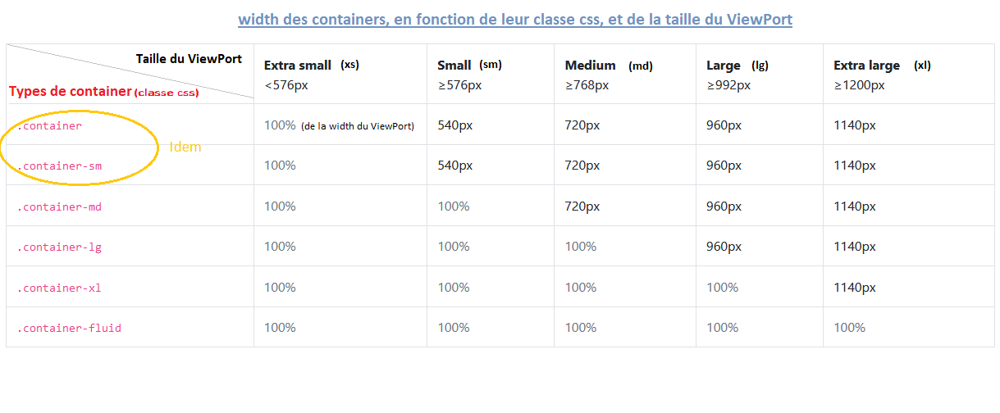

div avec class 'container-fluid', le container prend toute la largeur du ViewPort, quelle que soit sa taille !
div avec class 'container' : voir tableau ci-dessous, pour comprendre pourquoi cette largeur.
div avec class 'container-sm' (idem que 'container' en fait) : voir tableau ci-dessous, pour comprendre pourquoi cette largeur.
div avec class 'container-md' : voir tableau ci-dessous, pour comprendre pourquoi cette largeur.
div avec class 'container-lg' : voir tableau ci-dessous, pour comprendre pourquoi cette largeur.
div avec class 'container-xl' : voir tableau ci-dessous, pour comprendre pourquoi cette largeur.

col-2
col-6
col-4
col-sm-2
col-sm-6
col-sm-4
col-md-2
col-md-6
col-md-4
col-lg-2
col-lg-6
col-lg-4
col-xl-2
col-xl-6
col-xl-4
2 en md &+ ; 1 en lg &+ ; 5 en xl &+
4 en md &+ ; 9 en lg &+ ; 1 en xl &+
3 en md &+ ; 1 en lg &+ ; 2 en xl &+
3 en md &+ ; 1 en lg &+ ; 4 en xl &+
1 en sm &+ ; 5 en xl &+
3 en sm &+ ; 1 en xl &+
6 en sm &+ ; 2 en xl &+
2 en sm &+ ; 4 en xl &+
1 en lg &+ ; 6 en xl &+
9 en lg &+ ; 1 en xl &+
1 en lg &+ ; 1 en xl &+
1 en lg &+ ; 4 en xl &+
Lorsque la répartition des 12ème entre colonnes, n'est pas précisée, cela signifie que la répartition est égale :
col-md
col-md
col-md
col-md
col
col
col
col
Lorsque la répartition des 12ème entre colonnes, n'est précisée que pour quelques colonnes,
alors l'espace restant sera partagé équitablement entre les colonnes pour lesquelles on n'a pas précisé:
col-md
col-md-3
col-md-5
col-md
col-3
col
col
col-5
Il est aussi possible de mettre des row dans des col, et qui dit nouvelle row, dit : nouveaux groupes de 12 unités, ici
les 3 colonnes entourées de rouge :
col-md-3
col-md-9
col-lg-6
col-lg-4
col-lg-2
Lorsque le total des 12ème sur une row, fait moins de 12, il reste des blancs.
Dans ce cas, on peut choisir d'ajouter un offset de tant d'unités avant une colonne (depuis le class=.. celle-ci), pour la déplacer
d'autant vers la droite. La class CSS à lui ajouter est : offset-N , avec N le nb. d'unités (12ème) de décalage.
Enfin, tout comme pour les col-... il existe aussi des noms de classes du genre par exemple offset-md-N, signifiant ici par exemple que,
l'offset ne prendra effet que si la largeur du ViewPort est >= la taille d"un ViewPort Medium.
col-sm-2
col-sm-5
col-sm-2 précédé d'un offset de 2 unités (offset-2).
col-sm-5 précédé d'un offset de 1 unité (offset-1).
col-sm-2 précédé d'un offset de 1 unité (offset-md-1).
col-sm-5 précédé d'un offset de 2 unités (offset-md-2).